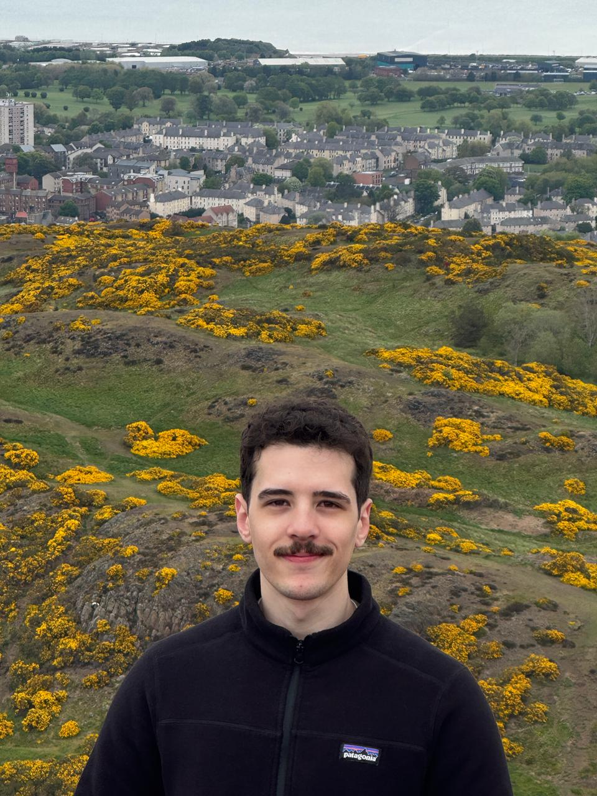

2026
LLM-Based Adversarial Persuasion Attacks on Fact-Checking Systems
EMNLP

Senior Applied Scientist
Microsoft
I work on AI Safety and Responsible AI in NLP including automatic content verification, factuality, LLM evaluations, LLM red teaming, adversarial attacks.
Our work on adversarial persuasion attacks was accepted to EMNLP 2026.
I joined Microsoft as a Senior Applied Scientist.